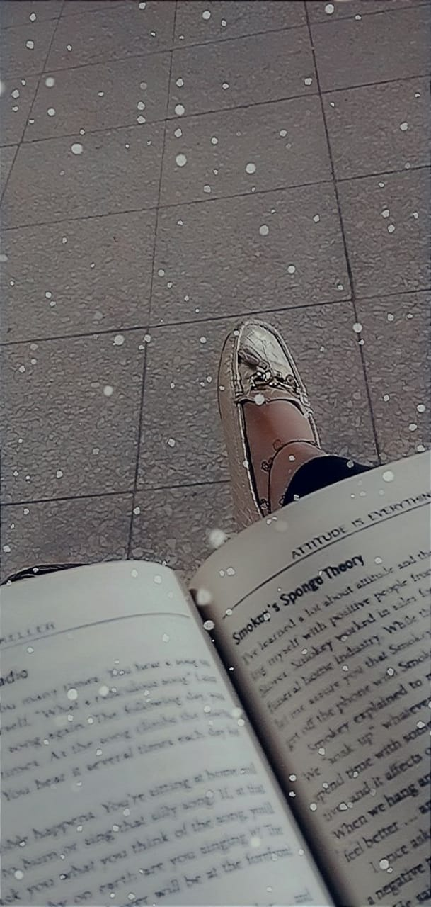
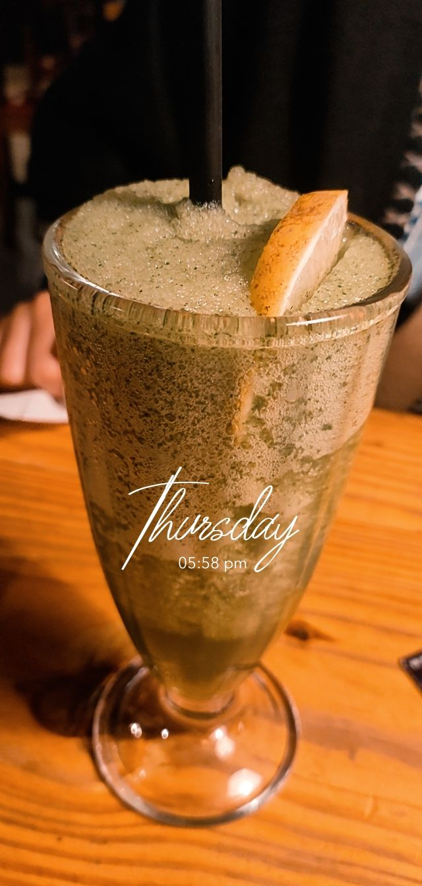
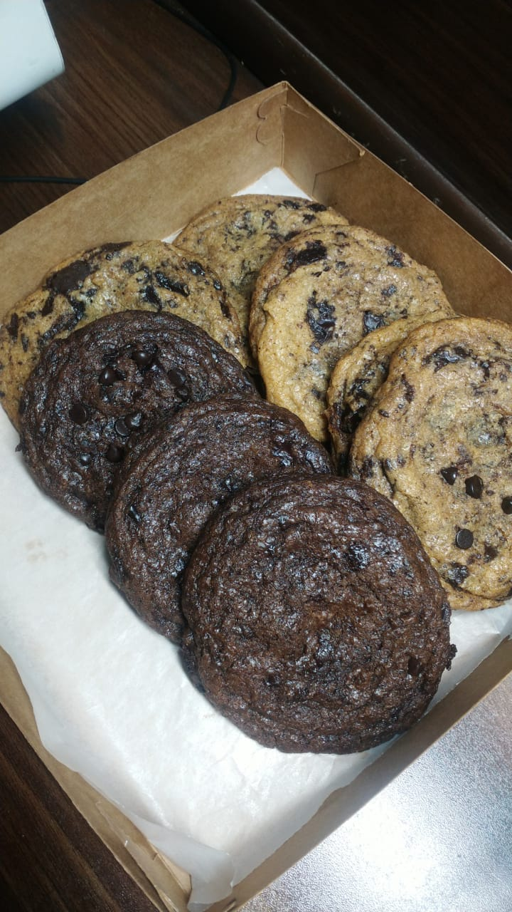
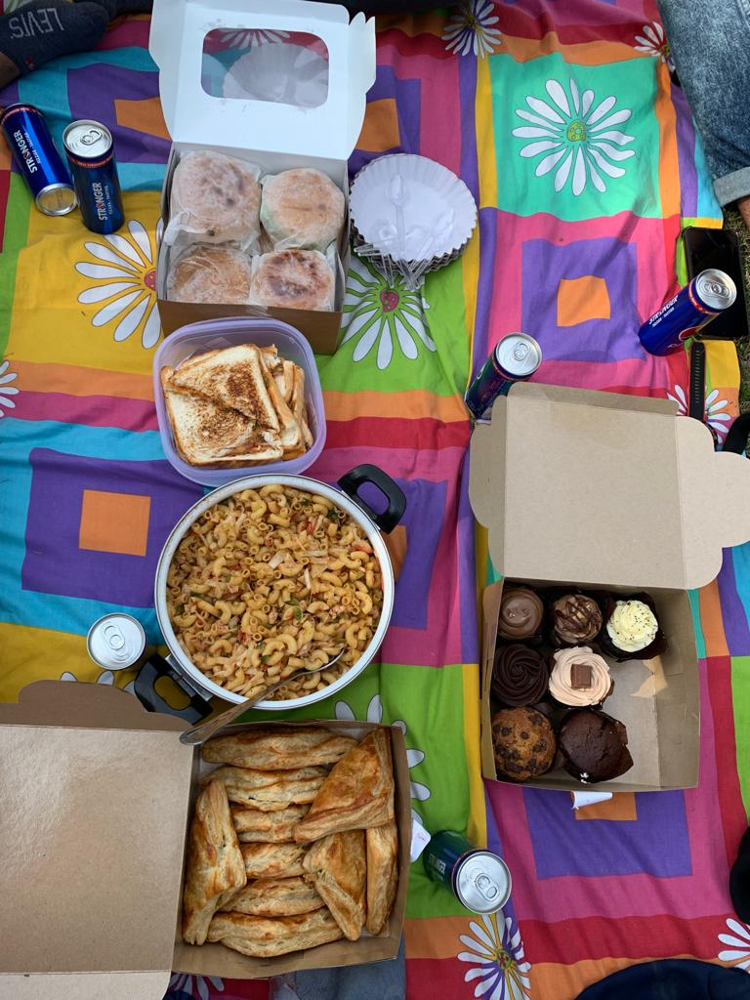

My Hobbies!
Reading!
I love to read book since i was in sixth grade and although
the habbit developed more and more with the passing years
My favourite writers are Daniell Steel, Elif Shafak who wrote the best selling
novels such as 'The forty rules of love',although that book is close to my heart.
The other fricition writers are John Green etc

This is one of the insight of me reading a book!
Foodie Life!

Random pics of food and picnic with friends
I love to go out on picnics with friends, trying new restaurants is an enthusiasitic hobby for me and especially fro my friends.
On the other hand, i enjoy trying the new culinary dishes which also tastes amazing.

